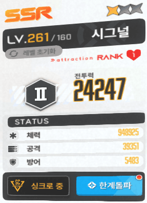
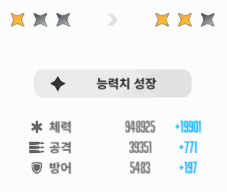
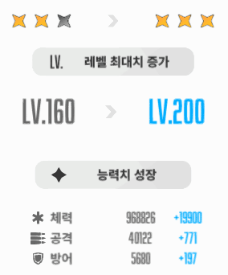
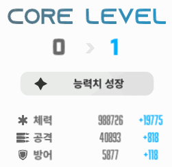
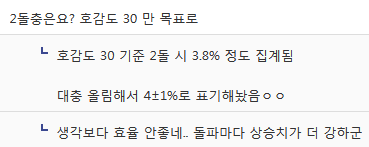
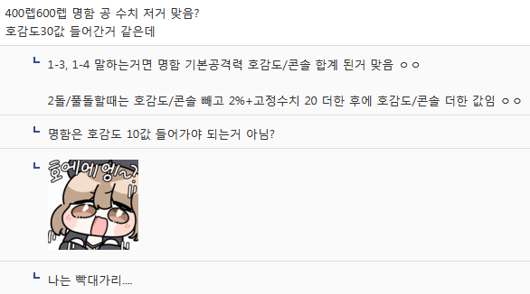
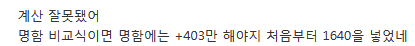
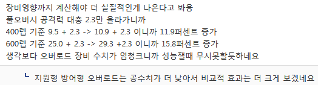
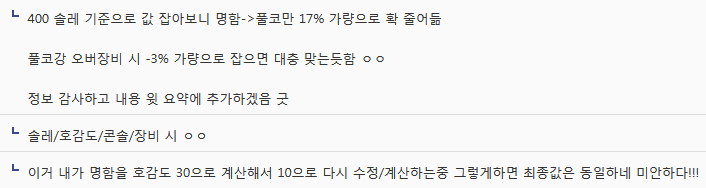

요약 1. 최종 딜량 상승의 경우 명함 -> 2돌 4±1% 정도의 상승률
요약 2. 최종 딜량 상승의 경우 명함 -> 풀돌 6±1% 정도의 상승률
요약 3. 최종 딜량 상승의 경우 풀돌 -> 풀코 14±1% 정도의 상승률
요약 4. 최종 딜량 상승의 경우 명함 -> 풀코 20±1% 정도의 상승률
요약 5. 돌파/코어강화의 경우 스텟의 2% 상승은 동일하나 세부 계산식이 조금 다름
요약 6. 돌파는 "기본 스텟의 2% 비율 + 고정수치 20 보정"의 비율로 상승 후 호감도/콘솔 스텟 합계
요약 7. 코어강화는 "요약 5의 최종 합계된 풀돌 상태의 스텟"의 2% 비율로 상승
0. 돌파 시 "기본 스텟의 2% + 고정수치 보정" 후 호감도/콘솔 스텟 합계 내용
참고자료 1. 미란다 1레벨/286레벨 돌파 자료
https://arca.live/b/nikketgv/85193453
참고자료 2. 돌파 관련 게시글에서 고정수치 값
https://gall.dcinside.com/gov/607032
0-1. 지원형 공격력 스텟 1레벨 기준 500 / 286 레벨 기준 37,352
0-2. 엘리시온 리사이클 연구소 레벨 55 = 공 기본스텟 1,375 증가
0-3. 지원형 미란다 1레벨에서 1돌 시 스텟 증가 +30 (500의 2% 10 + 고정수치 20)
0-4. 지원형 미란다 283레벨에서 1돌 시 스텟 증가 +767 (38,727의 2% = 747 + 고정수치 20)
0-5. 즉, 돌파의 경우 "기본 스텟의 2% + 고정수치 20" 라는 계산식을 확인 할 수 있음
0-6. 아래는 내 호감도 0 / 1돌 / 콘솔레벨 41 (+1,025) 시그널 기준으로 추가 자료 제시

(화력형 261레벨 기본 공격력{37,555} + {기본 공격력의 2%[751]+고정수치 20=771} + 콘솔레벨{1,025} = 39,351)

0-7. 1돌 -> 2돌 시 39,351 + 771로 표기되어있음
0-8. 화력형의 경우 261레벨 기본 공격력 37,555의 2% = 751 + 고정수치 20 = 771 증가 이는 아래 사진에서도 확인 가능

0-9. 2돌 -> 3돌 시 40,122 + 771로 표기되어있음, 계산식 위와 동

0-10. 3돌 후 1코어강화 40,893 + 818로 표기되어있음
0-11. (화력형 261레벨 기본 공격력{37,555} + 기본 공격력의 2%+고정수치{771} + 기본 공격력의 2%+고정수치{771} + 기본 공격력의 2%+고정수치{771} + 호감도{0} + 콘솔{1,025})의 2% 비율로 나타남 (817.86 반올림 적용 추측)
0-12. 좆그널 호감돌 올리기 싫어서 안건들였지만 호감도 올라가면 호감도 수치에 따라 합계된 최종 공격력의 2%로 될것으로 추측됨
0-13. 추가적으로 나는 돌파해서 증가된 스텟의 추가로 2% 비율인줄 알았는데 기본 스텟+보정+호감도/콘솔에 따른 2% 고정값으로 합계되는것으로 확인되서 다시 계산해봄
1. AR 기본 공격력에 따른 돌파/코어강화 시 스텟/딜량 상승 계산
기본 스텟 지표는 클뜯 유출러 시트에서 확인해서 가져왔고
최종 결론된 돌파 시 2%+고정수치 20, 코어강화 시 3돌 스텟+호감도/콘솔의 2%로 잡고 계산해보겠음
필그림/일반 니케에 다르지만 보편적인 계산값으로 호감도 30 + 콘솔 레벨 110 기준잡고 계산해봄
1-1. 400렙 (솔로레이드 고정레벨) 기준 호감도 0 / 콘솔 0
AR 화력형 기본 공격력 90,318 / AR 홍련 평타 계수 27.08%
명함: 기본 공격력 90,318 / 기본 데미지 24,458
2돌: 기본 공격력 93,970 / 기본 데미지 25,447
풀돌: 기본 공격력 95,796 / 기본 데미지 25,941
풀코: 기본 공격력 109,208 / 기본 데미지 29,573
명함 -> 2돌 4.04%
명함 -> 풀돌 6.06%
풀돌 -> 풀코 14.00%
명함 -> 풀코 20.9%
1-2. 600렙 (현 니케 레벨 최대치) 기준 호감도 0 / 콘솔 0
AR 화력형 238,927 / AR 홍련 평타 계수 27.08%
명함: 기본 공격력 238,927 / 기본 데미지 64,701
2돌: 기본 공격력 248,525 / 기본 데미지 67,300
풀돌: 기본 공격력 253,324 / 기본 데미지 68,600
풀코: 기본 공격력 288,786 / 기본 데미지 78,203
명함 -> 2돌 4.01%
명함 -> 풀돌 6.02%
풀돌 -> 풀코 13.99%
명함 -> 풀코 20.86%
1-3. 400렙 (솔로레이드 고정레벨) 기준 호감도 30(+1,640) / 콘솔 110(+2,750)
AR 화력형 기본 공격력 90,318 / AR 홍련 평타 계수 27.08%
명함: 기본 공격력 93,471 / 기본 데미지 25,311
2돌: 기본 공격력 98,360 / 기본 데미지 26,635
풀돌: 기본 공격력 100,186 / 기본 데미지 27,130
풀코: 기본 공격력 114,214 / 기본 데미지 30,929
명함 -> 2돌 5.23%
명함 -> 풀돌 7.01%
풀돌 -> 풀코 14.00%
명함 -> 풀코 22.19%
1-4. 600렙 (현 니케 레벨 최대치) 기준 호감도 30(+1,640) / 콘솔 110(+2,750)
AR 화력형 238,927 / AR 홍련 평타 계수 27.08%
명함: 기본 공격력 242,080 / 기본 데미지 65,555
2돌: 기본 공격력 252,915 / 기본 데미지 68,489
풀돌: 기본 공격력 257,714 / 기본 데미지 69,788
풀코: 기본 공격력 293,792 / 기본 데미지 79,558
명함 -> 2돌 대략 4.47%
명함 -> 풀돌 대략 6.45%
풀돌 -> 풀코 대략 13.99%
명함 -> 풀코 대략 21.36%
1-5. 400렙 (솔로레이드 고정레벨) 기준 호감도 30(+1,640) / 콘솔 110(+2,750) / 풀오버 5강(+16,401)
AR 화력형 기본 공격력 90,318 / AR 홍련 평타 계수 27.08%
명함: 기본 공격력 109,872 / 기본 데미지 29,753
2돌: 기본 공격력 114,761 / 기본 데미지 31,077
풀돌: 기본 공격력 116,587 / 기본 데미지 31,571
풀코: 기본 공격력 130,615 / 기본 데미지 35,370
명함 -> 2돌 4.44%
명함 -> 풀돌 6.11%
풀돌 -> 풀코 12.03%
명함 -> 풀코 18.87%
1-6. 600렙 (현 니케 레벨 최대치) 기준 호감도 30(+1,640) / 콘솔 110(+2,750) / 풀오버 5강(+16,401)
AR 화력형 238,927 / AR 홍련 평타 계수 27.08%
명함: 기본 공격력 258,481 / 기본 데미지 69,996
2돌: 기본 공격력 269,316 / 기본 데미지 72,930
풀돌: 기본 공격력 274,115 / 기본 데미지 74,230
풀코: 기본 공격력 310,193 / 기본 데미지 84,000
명함 -> 2돌 대략 4.19%
명함 -> 풀돌 대략 6.04%
풀돌 -> 풀코 대략 13.16%
명함 -> 풀코 대략 20.00%
※ 데미지 상승률은 소숫점 2자리까지만 집계함
2. 결론
2-1. 명함 = 개쓰래기 캐릭터가 아닌 이상 뽑아두면 언젠간 밥값할 수 있음
2-2. 풀돌 = 버스트컷신이 풀발기에쿠퍼액질질흘리면서 로비에 걸어둬야한다 하면 4개 뽑기
2-3. 풀코 = 극한의 성능충이라 장비/스킬/호감도/콘솔에다가 추가적인 스펙업이 필요하면 11개 뽑기
2-4. 골드 마일리지는 최대한 아끼고 필그림(픽업기간인데도 1% 같은 씹창렬 확률 = 그만큼 성능보장)에 쓸 것
3. 맺음말
진짜 어떻게 보면 윾동 말대로 쓰잘데기 없는 글이긴 한데 끝까지 읽고 오류지적/수정 동참해준 사람들 너무 고맙다
2돌 + 호감도 30 기준 추가

명함 호감도 30 들어간거 오류 확인하고 지적해줘서 수정함 ㄳㄳ


풀오버 장비 16,401 값 추가시 오차범위 변경되는거 지적한사람


근데 놀랍게도 위에 명함 호감도 30으로 잡은 오류랑 겹쳐 최종값은 비슷해서 다행쓰...
월급루팡하면서 검산 하다보니 오류가 너무 많았는데, 그래도 꼴값 떨면서 쓴 글 다 읽어주고 오류 찾아서 알려주는 사람들 있어서 너무 고맙다
덕분에 돌파/코어강화 2%에 대한 세부 계산식과 딜량 상승률 대략적이나마 비율 구할 수 있어서 재밌었다
이젠 진짜 오류 없겠...지???
했는데 지금 생각해보니 110 찍은 실제 유저들이 얼마나 있나 싶은데 그냥 유기하겠음............. 대충 ±1% 안에 들어갈??꺼같으??ㄴ
혼동방지를 위해 기존 글은 삭제함....
계속해서 조금씩 혼동 주는 점 미안하다 진짜...
아무튼 다들 즐겜하길 바란다
읽어줘서 고맙다
진짜끗